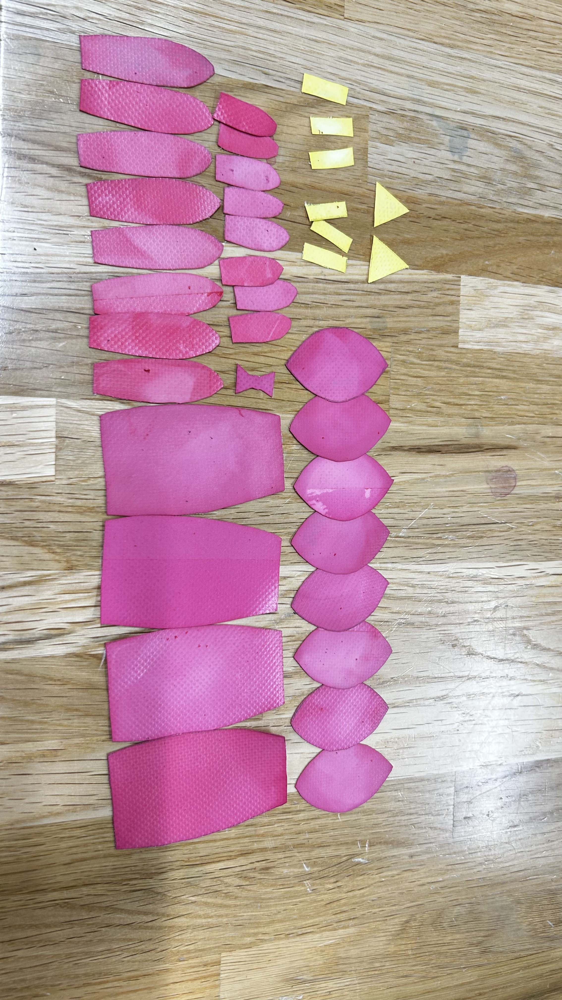

12月後半道用ゼミのまとめ
現在。改めフェレットで作成されたネズミの指人形をベースにそれをターポリンに置き換えて作成を開始。
同時にウサギの指人形の製作も並行してフィンガー（指人形）を制作している。
今回もその進捗を下記に記す。
前回はターポリンの汚れがひどかったため時間をかけて落としてから制作を始めたため進まず。
ターポリンを切り取りそこから縫い合わせる、ことを予定していたがそこまで至らなかった。
しかし、縫い合わせる前に染色する方が良いと言う結論が出た故。
とりあえず染色した。青っぽいのはネズミ、ピンクはウサギのターポリンとなる。
しかしながらここで手を焼いたのが「灰色」の表現である。
結果から言うと諦めました。
1回目は「赤→緑」で灰色に染色しようと考えたが失敗。
なんか病原菌を持ってそうな色になってしまった。
2回目、今度は黒を作り出してそこにつけてある程度色がついたら引き上げる方法を取った。
が、これも失敗。
結局、ネズミとウサギの最終色は下の画像の様になった。

また、縫い合わせる作業も始めようとしたが。
手縫いを試みた結果がこれである。
無理でした笑
と言う上記の失敗を踏まえ、リスクはありそうではあるものの進めていくためにも次回は来年からミシンを用いて作成をしていく予定である。
ゼミの時間外でも作業が必要だなと感じつつ、とりあえず今月後半の報告は終わる。